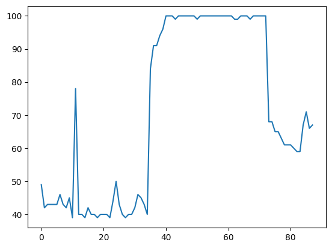

Python Advanced (2023-01-15 - 2024-01-17)¶
[1]:
a = 42
[2]:
type(a)
[2]:
int
Die Function dir() wird verwendet, um die attribute von a anzuzeigen
[3]:
dir(a)
[3]:
['__abs__',
'__add__',
'__and__',
'__bool__',
'__ceil__',
'__class__',
'__delattr__',
'__dir__',
'__divmod__',
'__doc__',
'__eq__',
'__float__',
'__floor__',
'__floordiv__',
'__format__',
'__ge__',
'__getattribute__',
'__getnewargs__',
'__getstate__',
'__gt__',
'__hash__',
'__index__',
'__init__',
'__init_subclass__',
'__int__',
'__invert__',
'__le__',
'__lshift__',
'__lt__',
'__mod__',
'__mul__',
'__ne__',
'__neg__',
'__new__',
'__or__',
'__pos__',
'__pow__',
'__radd__',
'__rand__',
'__rdivmod__',
'__reduce__',
'__reduce_ex__',
'__repr__',
'__rfloordiv__',
'__rlshift__',
'__rmod__',
'__rmul__',
'__ror__',
'__round__',
'__rpow__',
'__rrshift__',
'__rshift__',
'__rsub__',
'__rtruediv__',
'__rxor__',
'__setattr__',
'__sizeof__',
'__str__',
'__sub__',
'__subclasshook__',
'__truediv__',
'__trunc__',
'__xor__',
'as_integer_ratio',
'bit_count',
'bit_length',
'conjugate',
'denominator',
'from_bytes',
'imag',
'is_integer',
'numerator',
'real',
'to_bytes']
Syntax¶
[4]:
a = 42
if a == 42:
print('yay')
yay
[5]:
if a == 42:
print('yay')
yay
DocStrings¶
[6]:
# the function foo foos's a bar
# and returns the square of it
def foo(bar):
return bar**2
[7]:
def foo(bar):
"""the function foo foos's a bar
and returns the square of it"""
return bar**2
[8]:
type(foo)
[8]:
function
[9]:
foo.__doc__
[9]:
"the function foo foos's a bar\n and returns the square of it"
[10]:
help(foo)
Help on function foo in module __main__:
foo(bar)
the function foo foos's a bar
and returns the square of it
Type System¶
[11]:
a = 42
type(a)
[11]:
int
[12]:
b = 43
[13]:
a + b
[13]:
85
[14]:
c = 'abc'
[15]:
def maximum(l, r):
if l < r:
return r
return l
[16]:
maximum(1,2)
[16]:
2
[17]:
try:
maximum(1, '2')
except Exception as e:
print(type(e), e)
<class 'TypeError'> '<' not supported between instances of 'int' and 'str'
[18]:
maximum(1.2, 2)
[18]:
2
[19]:
def maximum_number(l, r):
if l < r:
return r
return l
[20]:
try:
maximum_number(1, '2')
except Exception as e:
print(type(e), e)
<class 'TypeError'> '<' not supported between instances of 'int' and 'str'
[21]:
try:
maximum_number(1, [1, 2, 3])
except Exception as e:
print(type(e), e)
<class 'TypeError'> '<' not supported between instances of 'int' and 'list'
Variables¶
Tuple Unpacking¶
[22]:
a = 42
[23]:
a, b = 42, 666
[24]:
a
[24]:
42
[25]:
b
[25]:
666
[26]:
(a, b) = (42, 666)
[27]:
def foo():
return 42, 666
[28]:
rv = foo()
[29]:
rv
[29]:
(42, 666)
[30]:
a, b = foo()
[31]:
a, b
[31]:
(42, 666)
[32]:
tmp = a
a = b
b = tmp
[33]:
a, b
[33]:
(666, 42)
[34]:
a, b = b, a
[35]:
a, b
[35]:
(42, 666)
Assignment Details¶
[36]:
a = 42
[37]:
id(a)
[37]:
140526007219432
[38]:
b = a
[39]:
id(b)
[39]:
140526007219432
[40]:
b += 1
[41]:
b
[41]:
43
[42]:
a
[42]:
42
[43]:
xxx = 666
[44]:
xxx
[44]:
666
[45]:
del xxx
[46]:
try:
xxx
except Exception as e:
print(type(e), e)
<class 'NameError'> name 'xxx' is not defined
[47]:
d = {
'a': 1,
'b': 2,
}
[48]:
d
[48]:
{'a': 1, 'b': 2}
[49]:
globals()['a']
[49]:
42
[50]:
a = 1234
[51]:
globals()['a']
[51]:
1234
[52]:
del a
Infinity?¶
[53]:
a = 2**64-1
[54]:
a
[54]:
18446744073709551615
[55]:
bin(a)
[55]:
'0b1111111111111111111111111111111111111111111111111111111111111111'
[56]:
len(bin(a))
[56]:
66
[57]:
a += 1
[58]:
bin(a)
[58]:
'0b10000000000000000000000000000000000000000000000000000000000000000'
[59]:
len(bin(a))
[59]:
67
[60]:
10**1000
[60]:
10000000000000000000000000000000000000000000000000000000000000000000000000000000000000000000000000000000000000000000000000000000000000000000000000000000000000000000000000000000000000000000000000000000000000000000000000000000000000000000000000000000000000000000000000000000000000000000000000000000000000000000000000000000000000000000000000000000000000000000000000000000000000000000000000000000000000000000000000000000000000000000000000000000000000000000000000000000000000000000000000000000000000000000000000000000000000000000000000000000000000000000000000000000000000000000000000000000000000000000000000000000000000000000000000000000000000000000000000000000000000000000000000000000000000000000000000000000000000000000000000000000000000000000000000000000000000000000000000000000000000000000000000000000000000000000000000000000000000000000000000000000000000000000000000000000000000000000000000000000000000000000000000000000000000000000000000000000000000000000000000000000000000000000000000000000000000000
Datatype Conversions¶
[61]:
a = '42'
[62]:
type(a)
[62]:
str
[63]:
int(a)
[63]:
42
[64]:
try:
int('42.0')
except Exception as e:
print(type(e), e)
<class 'ValueError'> invalid literal for int() with base 10: '42.0'
[65]:
str(42)
[65]:
'42'
[66]:
int('0x42', 16)
[66]:
66
[67]:
float(42)
[67]:
42.0
[68]:
float('42.666')
[68]:
42.666
[69]:
int(42.666)
[69]:
42
Compound Datatypes¶
Lists¶
[70]:
l = list()
[71]:
type(l)
[71]:
list
[72]:
l = []
[73]:
l = [1,2,'drei']
[74]:
for elem in l:
print(elem)
1
2
drei
[75]:
l.append(4.0)
[76]:
l
[76]:
[1, 2, 'drei', 4.0]
[77]:
l1 = [5, 6, 7]
[78]:
l.extend(l1)
[79]:
l
[79]:
[1, 2, 'drei', 4.0, 5, 6, 7]
[80]:
l2 = [8, 9, 10]
[81]:
l.append(l2)
[82]:
l
[82]:
[1, 2, 'drei', 4.0, 5, 6, 7, [8, 9, 10]]
[83]:
l[2]
[83]:
'drei'
[84]:
try:
l[100]
except Exception as e:
print(type(e), e)
<class 'IndexError'> list index out of range
[85]:
try:
l[100] = 666
except Exception as e:
print(type(e), e)
<class 'IndexError'> list assignment index out of range
[86]:
l += l2
[87]:
l
[87]:
[1, 2, 'drei', 4.0, 5, 6, 7, [8, 9, 10], 8, 9, 10]
[88]:
6 in l
[88]:
True
[89]:
10 in l
[89]:
True
[90]:
666 in l
[90]:
False
[91]:
del l[2]
[92]:
l
[92]:
[1, 2, 4.0, 5, 6, 7, [8, 9, 10], 8, 9, 10]
[93]:
l.pop()
[93]:
10
[94]:
l
[94]:
[1, 2, 4.0, 5, 6, 7, [8, 9, 10], 8, 9]
Tuple¶
[95]:
t = (1, 2, 'drei')
[96]:
t[2]
[96]:
'drei'
[97]:
try:
t.append(4.0)
except Exception as e:
print(type(e), e)
<class 'AttributeError'> 'tuple' object has no attribute 'append'
[98]:
2 in t
[98]:
True
[99]:
666 in t
[99]:
False
Dictionary¶
[100]:
d = {
'one': 1,
'two': 2,
}
[101]:
type(d)
[101]:
dict
[102]:
d['one']
[102]:
1
[103]:
'one' in d
[103]:
True
[104]:
d['one'] = 1.0
[105]:
try:
d['three']
except Exception as e:
print(type(e), e)
<class 'KeyError'> 'three'
[106]:
del d['one']
[107]:
d
[107]:
{'two': 2}
[108]:
d = {'one': 1, 'two': 2, 'three': 3}
[109]:
for elem in d:
print(elem)
one
two
three
[110]:
for elem in d.keys():
print(elem)
one
two
three
[111]:
for elem in d.values():
print(elem)
1
2
3
[112]:
for elem in d.items():
print(elem)
('one', 1)
('two', 2)
('three', 3)
[113]:
a, b = 1, 2
[114]:
for elem in d.items():
# potschert
k = elem[0]
v = elem[1]
print(k, v)
one 1
two 2
three 3
[115]:
# Pythonic
for k, v in d.items():
print(k, v)
one 1
two 2
three 3
Sets¶
[116]:
s = set()
[117]:
s= {} # dict!
[118]:
s = {1, 2, 'drei'}
[119]:
for elem in s:
print(elem)
1
2
drei
[120]:
2 in s
[120]:
True
[121]:
s.add(4.0)
[122]:
4.0 in s
[122]:
True
[123]:
try:
s[3]
except Exception as e:
print(type(e), e)
<class 'TypeError'> 'set' object is not subscriptable
[124]:
s
[124]:
{1, 2, 4.0, 'drei'}
[125]:
print(s)
{1, 2, 'drei', 4.0}
enumerate()¶
[126]:
l = [1, 2, 3, 4]
[127]:
for elem in l:
print(elem)
1
2
3
4
[128]:
idx = 0
for elem in l:
print(idx, elem)
idx += 1
0 1
1 2
2 3
3 4
[129]:
for elem in enumerate(l):
print(elem)
(0, 1)
(1, 2)
(2, 3)
(3, 4)
[130]:
for elem in enumerate(l):
idx = elem[0]
value = elem[1]
print(idx, value)
0 1
1 2
2 3
3 4
[131]:
for idx, value in enumerate(l):
print(idx, value)
0 1
1 2
2 3
3 4
dict, and enumerate()¶
[132]:
pairs = [('one', 1), ('two', 2)]
[133]:
d = dict(pairs)
d
[133]:
{'one': 1, 'two': 2}
[134]:
l = ['zero', 'one']
[135]:
for elem in l:
print(elem)
zero
one
[136]:
idx = 0
for elem in l:
print(idx, elem)
idx += 1
0 zero
1 one
[137]:
for elem in enumerate(l):
print(elem)
(0, 'zero')
(1, 'one')
[138]:
for idx, value in enumerate(l):
print(idx, value)
0 zero
1 one
[139]:
dict(enumerate(l))
[139]:
{0: 'zero', 1: 'one'}
while¶
[140]:
summe = 0
num = 1
while num <= 100:
summe += num
num += 1
print(summe)
5050
[141]:
sum(range(1, 101)) # so gehts auch
[141]:
5050
[142]:
import random
n_tries = 0
while True:
n_tries += 1
eyes = random.randrange(1, 7)
if eyes == 6:
print('hooray nach dem', n_tries, 'ten versuch')
break
hooray nach dem 2 ten versuch
[143]:
n_tries = 0
win = False
while n_tries < 10:
n_tries += 1
eyes = random.randrange(1, 7)
if eyes == 6:
win = True
break
if win:
print('win')
else:
print('lose')
win
[144]:
n_tries = 0
while n_tries < 10:
n_tries += 1
eyes = random.randrange(1, 7)
if eyes == 6:
print('win')
break
else:
print('lose')
win
range()¶
[145]:
for elem in range(3):
print(elem)
0
1
2
[146]:
for elem in range(1, 4):
print(elem)
1
2
3
[147]:
for elem in range(1, 9, 2):
print(elem)
1
3
5
7
[148]:
l = [0,1,2]
[149]:
for elem in l:
print(elem)
0
1
2
[150]:
for elem in range(3):
print(elem)
0
1
2
[151]:
r = range(3)
type(r)
[151]:
range
[152]:
print(r)
range(0, 3)
[153]:
print(type(r))
<class 'range'>
[154]:
for elem in r:
print(elem)
0
1
2
[155]:
r = range(3)
[156]:
it = iter(r)
[157]:
next(it)
[157]:
0
[158]:
next(it)
[158]:
1
[159]:
next(it)
[159]:
2
[160]:
try:
next(it)
except Exception as e:
print(type(e), e)
<class 'StopIteration'>
[161]:
l = [0,1,2]
[162]:
it = iter(l)
[163]:
next(it)
[163]:
0
[164]:
next(it)
[164]:
1
[165]:
next(it)
[165]:
2
[166]:
try:
next(it)
except Exception as e:
print(type(e), e)
<class 'StopIteration'>
[167]:
def even(maximum):
rv = []
num = 0
while num < maximum:
if num%2 == 0:
rv.append(num)
num += 1
return rv
[168]:
for elem in even(10):
print(elem)
0
2
4
6
8
[169]:
def even(maximum):
print('start')
num = 0
while num < maximum:
if num%2 == 0:
print('suspend, produce', num)
yield num
print('wakeup')
num += 1
print('end')
[170]:
nums = even(10)
[171]:
print(nums)
<generator object even at 0x7fceb0516c20>
[172]:
it = iter(nums)
[173]:
next(it)
start
suspend, produce 0
[173]:
0
[174]:
next(it)
wakeup
suspend, produce 2
[174]:
2
[175]:
next(it)
wakeup
suspend, produce 4
[175]:
4
[176]:
next(it)
wakeup
suspend, produce 6
[176]:
6
[177]:
next(it)
wakeup
suspend, produce 8
[177]:
8
[178]:
try:
next(it)
except Exception as e:
print(type(e), e)
wakeup
end
<class 'StopIteration'>
[179]:
cnt = 2
while cnt < 10:
print(cnt)
cnt += 1
2
3
4
5
6
7
8
9
[180]:
for cnt in range(2, 10, 1):
print(cnt)
2
3
4
5
6
7
8
9
Functions¶
[181]:
def maximum(a: int, b: int) -> int:
if a < b:
return b
return a
[182]:
maximum('a', 'b')
[182]:
'b'
[183]:
maximum(1, 2)
[183]:
2
[184]:
maximum(1, 1.2)
[184]:
1.2
[185]:
try:
maximum(1, '2')
except Exception as e:
print(type(e), e)
<class 'TypeError'> '<' not supported between instances of 'int' and 'str'
[186]:
1.0 == 1
[186]:
True
[187]:
f = 1.0
[188]:
f.__eq__(1)
[188]:
True
[189]:
s = '1'
[190]:
s.__eq__(1)
[190]:
NotImplemented
[191]:
i = 1
[192]:
i.__eq__('1')
[192]:
NotImplemented
[193]:
id(maximum)
[193]:
140525696085312
[194]:
a = maximum
[195]:
a(1, 2)
[195]:
2
[196]:
def create_print_function(msg):
def inner():
print(msg)
return inner
[197]:
joerg = create_print_function('Joerg')
[198]:
joerg
[198]:
<function __main__.create_print_function.<locals>.inner()>
[199]:
joerg()
Joerg
References, (Im)mutability¶
[200]:
a = 42
b = a
[201]:
id(a)
[201]:
140526007219432
[202]:
id(b)
[202]:
140526007219432
[203]:
id(a) == id(b)
[203]:
True
[204]:
a is b
[204]:
True
[205]:
a == b
[205]:
True
[206]:
a += 1
[207]:
id(a)
[207]:
140526007219464
[208]:
a is b
[208]:
False
[209]:
a == b
[209]:
False
[210]:
c
[210]:
'abc'
[211]:
del c
[212]:
c = 666
[213]:
id(c)
[213]:
140525697462832
[214]:
c += 1
[215]:
id(c)
[215]:
140525697462736
[216]:
a = 42
[217]:
id(a)
[217]:
140526007219432
[218]:
b = 42
[219]:
id(b)
[219]:
140526007219432
[220]:
a = 666
[221]:
id(a)
[221]:
140525697463408
[222]:
b = 666
[223]:
id(b)
[223]:
140525697463280
Shallow copy
[224]:
a = [1,2,3]
b = a[:]
[225]:
b.append(4)
[226]:
b
[226]:
[1, 2, 3, 4]
[227]:
a
[227]:
[1, 2, 3]
[228]:
a = [1,2,[3,4,5],6, 7]
b = a[:]
[229]:
b[2].append(666)
[230]:
b
[230]:
[1, 2, [3, 4, 5, 666], 6, 7]
[231]:
a
[231]:
[1, 2, [3, 4, 5, 666], 6, 7]
More About Strings¶
[232]:
path = 'C:\no\name'
print(path)
C:
o
ame
[233]:
line = ' \t joerg 666\n'
[234]:
match_expression = r'^\s*(\S+)\s*(\d+)\s*$'
[235]:
import re
[236]:
compiled_expression = re.compile(match_expression)
[237]:
match = compiled_expression.search(line)
[238]:
match.group(1)
[238]:
'joerg'
[239]:
match.group(2)
[239]:
'666'
String Methods¶
[240]:
s = 'mississippi'
[241]:
s.count('ss')
[241]:
2
[242]:
s.find('ss')
[242]:
2
[243]:
s.find('ss', 3)
[243]:
5
[244]:
s.find('xxx')
[244]:
-1
[245]:
s.index('ss')
[245]:
2
[246]:
try:
s.index('xxx')
except Exception as e:
print(type(e), e)
<class 'ValueError'> substring not found
[247]:
'XXX'.isupper()
[247]:
True
[248]:
'xxx'.islower()
[248]:
True
[249]:
'file.csv'.endswith('.csv')
[249]:
True
[250]:
'file.csv'.startswith('file')
[250]:
True
[251]:
'abc123'.isalnum()
[251]:
True
[252]:
'***'.center(100)
[252]:
' *** '
[253]:
s
[253]:
'mississippi'
[254]:
s.rfind('ss')
[254]:
5
[255]:
' xxx '.strip()
[255]:
'xxx'
[256]:
' xxx '.rstrip()
[256]:
' xxx'
[257]:
' xxx '.lstrip()
[257]:
'xxx '
[258]:
'123 abc 1 2 3 '.strip(' 123')
[258]:
'abc'
[259]:
line = 'root:x:0:0:Super User:/root:/bin/bash\n'
[260]:
line = line.rstrip()
[261]:
line
[261]:
'root:x:0:0:Super User:/root:/bin/bash'
[262]:
elems = line.split(':')
[263]:
elems[0]
[263]:
'root'
[264]:
name, passwd, uid, gid, descr, home, loginshell = line.split(':')
[265]:
name
[265]:
'root'
[266]:
l = ['xxx', 'yyy', 'zzz']
[267]:
joined_l = '-'.join(l)
[268]:
l
[268]:
['xxx', 'yyy', 'zzz']
[269]:
joined_l
[269]:
'xxx-yyy-zzz'
[270]:
line = 'root:x:0:0:Super User:/root:/bin/bash\n'
[271]:
line.split(':', 2)
[271]:
['root', 'x', '0:0:Super User:/root:/bin/bash\n']
More About Lists¶
[272]:
l = ['a', 'b', 'c']
[273]:
l.append('d')
[274]:
l
[274]:
['a', 'b', 'c', 'd']
[275]:
l.extend(['e', 'f'])
[276]:
l
[276]:
['a', 'b', 'c', 'd', 'e', 'f']
[277]:
l.extend('ghi')
[278]:
l
[278]:
['a', 'b', 'c', 'd', 'e', 'f', 'g', 'h', 'i']
[279]:
for c in 'ghi':
print(c)
g
h
i
[280]:
l.extend(range(3, 6))
[281]:
l
[281]:
['a', 'b', 'c', 'd', 'e', 'f', 'g', 'h', 'i', 3, 4, 5]
[282]:
try:
l.extend(666)
except Exception as e:
print(type(e), e)
<class 'TypeError'> 'int' object is not iterable
[283]:
try:
for i in 666:
print(i)
except Exception as e:
print(type(e), e)
<class 'TypeError'> 'int' object is not iterable
[284]:
rv = l.append(100)
[285]:
type(rv)
[285]:
NoneType
[286]:
print(rv)
None
[287]:
def f(): pass
[288]:
rv = f()
[289]:
print(rv)
None
More About Dictionaries¶
[290]:
d = {'one': 1,
'two': 2,
}
[291]:
rv = d.get('three')
[292]:
print(rv)
None
[ ]:
[293]:
rv = d.get('three')
if rv:
print(rv)
else:
print(3)
3
[294]:
rv = d.get('three', 3)
print(rv)
3
[295]:
rv = d.get('four')
if rv is not None:
print(rv)
else:
d['four'] = 4
rv = d.get('four')
print(rv)
4
[296]:
rv = d.setdefault('five', 5)
[297]:
print(rv)
5
[298]:
d
[298]:
{'one': 1, 'two': 2, 'four': 4, 'five': 5}
[299]:
d2 = {'five': 5.5, 'six': 6, 'seven': 7.0}
[300]:
d.update(d2)
[301]:
d
[301]:
{'one': 1, 'two': 2, 'four': 4, 'five': 5.5, 'six': 6, 'seven': 7.0}
[302]:
list(d.keys())
[302]:
['one', 'two', 'four', 'five', 'six', 'seven']
[303]:
d[666] = 'crap'
[304]:
d
[304]:
{'one': 1,
'two': 2,
'four': 4,
'five': 5.5,
'six': 6,
'seven': 7.0,
666: 'crap'}
[305]:
for elem in d:
print(elem)
one
two
four
five
six
seven
666
[306]:
for key in d.keys():
print(key)
one
two
four
five
six
seven
666
[307]:
for v in d.values():
print(v)
1
2
4
5.5
6
7.0
crap
[308]:
for elem in d.items():
print(elem)
('one', 1)
('two', 2)
('four', 4)
('five', 5.5)
('six', 6)
('seven', 7.0)
(666, 'crap')
[309]:
for k, v in d.items():
print(k, v)
one 1
two 2
four 4
five 5.5
six 6
seven 7.0
666 crap
[310]:
{}
[310]:
{}
[311]:
dict([('one', 1), ('two', 2)])
[311]:
{'one': 1, 'two': 2}
[312]:
{
'one': 1,
'two': 2,
}
[312]:
{'one': 1, 'two': 2}
More About Sets¶
[313]:
s = set()
[314]:
s.add(42)
[315]:
s.add('abc')
[316]:
s
[316]:
{42, 'abc'}
[317]:
42 in s
[317]:
True
[318]:
try:
s.add([1,2,'drei'])
except Exception as e:
print(type(e), e)
<class 'TypeError'> unhashable type: 'list'
[319]:
i = 666
[320]:
hash(i)
[320]:
666
[321]:
i.__hash__()
[321]:
666
[322]:
l = [1, 2, 'drei']
[323]:
try:
hash(l)
except Exception as e:
print(type(e), e)
<class 'TypeError'> unhashable type: 'list'
[324]:
list.__dict__.get('__hash__')
Comprehensions (List, Dictionary, Set)¶
[325]:
l = [0, 1, 2, 3, 4, 5]
[326]:
l = list(range(6))
[327]:
l
[327]:
[0, 1, 2, 3, 4, 5]
[328]:
squares = []
for elem in l:
squares.append(elem**2)
squares
[328]:
[0, 1, 4, 9, 16, 25]
[329]:
squares = [elem**2 for elem in l]
[330]:
squares
[330]:
[0, 1, 4, 9, 16, 25]
[331]:
even_squares = [elem**2 for elem in l if elem%2 == 0]
[332]:
even_squares
[332]:
[0, 4, 16]
[333]:
l
[333]:
[0, 1, 2, 3, 4, 5]
[334]:
d = {}
[335]:
for elem in l:
d[elem] = elem**2
[336]:
d
[336]:
{0: 0, 1: 1, 2: 4, 3: 9, 4: 16, 5: 25}
[337]:
{elem: elem**2 for elem in l}
[337]:
{0: 0, 1: 1, 2: 4, 3: 9, 4: 16, 5: 25}
[338]:
s = set()
for elem in l:
s.add(elem**2)
[339]:
s
[339]:
{0, 1, 4, 9, 16, 25}
[340]:
{elem**2 for elem in l}
[340]:
{0, 1, 4, 9, 16, 25}
[341]:
squares = []
for elem in l:
squares.append(elem**2)
squares
[341]:
[0, 1, 4, 9, 16, 25]
[342]:
[elem**2 for elem in l]
[342]:
[0, 1, 4, 9, 16, 25]
[343]:
for num in [elem**2 for elem in l]:
print(num)
0
1
4
9
16
25
[344]:
for num in (elem**2 for elem in l):
print(num)
0
1
4
9
16
25
File I/O¶
[345]:
f = open('/etc/passwd', encoding='utf-8')
[346]:
for line in f:
print(line, end='')
root:x:0:0:Super User:/root:/bin/bash
bin:x:1:1:bin:/bin:/usr/sbin/nologin
daemon:x:2:2:daemon:/sbin:/usr/sbin/nologin
adm:x:3:4:adm:/var/adm:/usr/sbin/nologin
lp:x:4:7:lp:/var/spool/lpd:/usr/sbin/nologin
sync:x:5:0:sync:/sbin:/bin/sync
shutdown:x:6:0:shutdown:/sbin:/sbin/shutdown
halt:x:7:0:halt:/sbin:/sbin/halt
mail:x:8:12:mail:/var/spool/mail:/usr/sbin/nologin
operator:x:11:0:operator:/root:/usr/sbin/nologin
games:x:12:100:games:/usr/games:/usr/sbin/nologin
ftp:x:14:50:FTP User:/var/ftp:/usr/sbin/nologin
nobody:x:65534:65534:Kernel Overflow User:/:/usr/sbin/nologin
dbus:x:81:81:System Message Bus:/:/usr/sbin/nologin
apache:x:48:48:Apache:/usr/share/httpd:/sbin/nologin
tss:x:59:59:Account used for TPM access:/:/usr/sbin/nologin
systemd-coredump:x:998:998:systemd Core Dumper:/:/usr/sbin/nologin
systemd-network:x:192:192:systemd Network Management:/:/usr/sbin/nologin
systemd-oom:x:997:997:systemd Userspace OOM Killer:/:/usr/sbin/nologin
systemd-resolve:x:193:193:systemd Resolver:/:/usr/sbin/nologin
systemd-timesync:x:996:996:systemd Time Synchronization:/:/usr/sbin/nologin
qemu:x:107:107:qemu user:/:/sbin/nologin
polkitd:x:114:114:User for polkitd:/:/sbin/nologin
avahi:x:70:70:Avahi mDNS/DNS-SD Stack:/var/run/avahi-daemon:/sbin/nologin
geoclue:x:995:994:User for geoclue:/var/lib/geoclue:/sbin/nologin
nm-openconnect:x:994:993:NetworkManager user for OpenConnect:/:/sbin/nologin
usbmuxd:x:113:113:usbmuxd user:/:/sbin/nologin
gluster:x:993:992:GlusterFS daemons:/run/gluster:/sbin/nologin
rtkit:x:172:172:RealtimeKit:/proc:/sbin/nologin
pipewire:x:992:990:PipeWire System Daemon:/run/pipewire:/usr/sbin/nologin
saslauth:x:991:76:Saslauthd user:/run/saslauthd:/sbin/nologin
chrony:x:990:989:chrony system user:/var/lib/chrony:/sbin/nologin
dnsmasq:x:989:988:Dnsmasq DHCP and DNS server:/var/lib/dnsmasq:/usr/sbin/nologin
rpc:x:32:32:Rpcbind Daemon:/var/lib/rpcbind:/sbin/nologin
rpcuser:x:29:29:RPC Service User:/var/lib/nfs:/sbin/nologin
openvpn:x:988:987:OpenVPN:/etc/openvpn:/sbin/nologin
nm-openvpn:x:987:986:Default user for running openvpn spawned by NetworkManager:/:/sbin/nologin
colord:x:986:985:User for colord:/var/lib/colord:/sbin/nologin
unbound:x:985:984:Unbound DNS resolver:/var/lib/unbound:/sbin/nologin
abrt:x:173:173::/etc/abrt:/sbin/nologin
flatpak:x:984:982:Flatpak system helper:/:/usr/sbin/nologin
gdm:x:42:42:GNOME Display Manager:/var/lib/gdm:/usr/sbin/nologin
gnome-initial-setup:x:983:981::/run/gnome-initial-setup/:/sbin/nologin
vboxadd:x:982:1::/var/run/vboxadd:/sbin/nologin
sshd:x:74:74:Privilege-separated SSH:/usr/share/empty.sshd:/usr/sbin/nologin
tcpdump:x:72:72:tcpdump:/:/usr/sbin/nologin
jfasch:x:1000:1000:Jörg Faschingbauer:/home/jfasch:/bin/bash
[347]:
f = open('/etc/passwd', encoding='utf-8')
[348]:
f.read(5)
[348]:
'root:'
[349]:
f.read(5)
[349]:
'x:0:0'
[350]:
f.readline()
[350]:
':Super User:/root:/bin/bash\n'
[351]:
f.readline()
[351]:
'bin:x:1:1:bin:/bin:/usr/sbin/nologin\n'
[352]:
f.read()
[352]:
'daemon:x:2:2:daemon:/sbin:/usr/sbin/nologin\nadm:x:3:4:adm:/var/adm:/usr/sbin/nologin\nlp:x:4:7:lp:/var/spool/lpd:/usr/sbin/nologin\nsync:x:5:0:sync:/sbin:/bin/sync\nshutdown:x:6:0:shutdown:/sbin:/sbin/shutdown\nhalt:x:7:0:halt:/sbin:/sbin/halt\nmail:x:8:12:mail:/var/spool/mail:/usr/sbin/nologin\noperator:x:11:0:operator:/root:/usr/sbin/nologin\ngames:x:12:100:games:/usr/games:/usr/sbin/nologin\nftp:x:14:50:FTP User:/var/ftp:/usr/sbin/nologin\nnobody:x:65534:65534:Kernel Overflow User:/:/usr/sbin/nologin\ndbus:x:81:81:System Message Bus:/:/usr/sbin/nologin\napache:x:48:48:Apache:/usr/share/httpd:/sbin/nologin\ntss:x:59:59:Account used for TPM access:/:/usr/sbin/nologin\nsystemd-coredump:x:998:998:systemd Core Dumper:/:/usr/sbin/nologin\nsystemd-network:x:192:192:systemd Network Management:/:/usr/sbin/nologin\nsystemd-oom:x:997:997:systemd Userspace OOM Killer:/:/usr/sbin/nologin\nsystemd-resolve:x:193:193:systemd Resolver:/:/usr/sbin/nologin\nsystemd-timesync:x:996:996:systemd Time Synchronization:/:/usr/sbin/nologin\nqemu:x:107:107:qemu user:/:/sbin/nologin\npolkitd:x:114:114:User for polkitd:/:/sbin/nologin\navahi:x:70:70:Avahi mDNS/DNS-SD Stack:/var/run/avahi-daemon:/sbin/nologin\ngeoclue:x:995:994:User for geoclue:/var/lib/geoclue:/sbin/nologin\nnm-openconnect:x:994:993:NetworkManager user for OpenConnect:/:/sbin/nologin\nusbmuxd:x:113:113:usbmuxd user:/:/sbin/nologin\ngluster:x:993:992:GlusterFS daemons:/run/gluster:/sbin/nologin\nrtkit:x:172:172:RealtimeKit:/proc:/sbin/nologin\npipewire:x:992:990:PipeWire System Daemon:/run/pipewire:/usr/sbin/nologin\nsaslauth:x:991:76:Saslauthd user:/run/saslauthd:/sbin/nologin\nchrony:x:990:989:chrony system user:/var/lib/chrony:/sbin/nologin\ndnsmasq:x:989:988:Dnsmasq DHCP and DNS server:/var/lib/dnsmasq:/usr/sbin/nologin\nrpc:x:32:32:Rpcbind Daemon:/var/lib/rpcbind:/sbin/nologin\nrpcuser:x:29:29:RPC Service User:/var/lib/nfs:/sbin/nologin\nopenvpn:x:988:987:OpenVPN:/etc/openvpn:/sbin/nologin\nnm-openvpn:x:987:986:Default user for running openvpn spawned by NetworkManager:/:/sbin/nologin\ncolord:x:986:985:User for colord:/var/lib/colord:/sbin/nologin\nunbound:x:985:984:Unbound DNS resolver:/var/lib/unbound:/sbin/nologin\nabrt:x:173:173::/etc/abrt:/sbin/nologin\nflatpak:x:984:982:Flatpak system helper:/:/usr/sbin/nologin\ngdm:x:42:42:GNOME Display Manager:/var/lib/gdm:/usr/sbin/nologin\ngnome-initial-setup:x:983:981::/run/gnome-initial-setup/:/sbin/nologin\nvboxadd:x:982:1::/var/run/vboxadd:/sbin/nologin\nsshd:x:74:74:Privilege-separated SSH:/usr/share/empty.sshd:/usr/sbin/nologin\ntcpdump:x:72:72:tcpdump:/:/usr/sbin/nologin\njfasch:x:1000:1000:Jörg Faschingbauer:/home/jfasch:/bin/bash\n'
[353]:
f.read(1)
[353]:
''
[354]:
f = open('/etc/passwd', 'rb')
[355]:
b = f.read(5)
[356]:
type(b)
[356]:
bytes
Data Science¶
[357]:
import pandas
[360]:
df = pandas.read_csv('meine-cpu.csv', delimiter=';')
[370]:
df
[370]:
| hwmon2 | hwmon4 | hwmon5 | hwmon7 | hwmon8 | |
|---|---|---|---|---|---|
| 0 | 37.85 | 41.0 | 41.0 | 49.0 | 30.0 |
| 1 | 37.85 | 40.0 | 40.0 | 42.0 | 31.0 |
| 2 | 37.85 | 41.0 | 41.0 | 43.0 | 31.0 |
| 3 | 37.85 | 41.0 | 41.0 | 43.0 | 31.0 |
| 4 | 37.85 | 41.0 | 41.0 | 43.0 | 31.0 |
| ... | ... | ... | ... | ... | ... |
| 83 | 43.85 | 78.0 | 78.0 | 59.0 | 32.0 |
| 84 | 44.85 | 76.0 | 76.0 | 67.0 | 32.0 |
| 85 | 44.85 | 75.0 | 75.0 | 71.0 | 32.0 |
| 86 | 44.85 | 74.0 | 74.0 | 66.0 | 33.0 |
| 87 | 44.85 | 73.0 | 73.0 | 67.0 | 33.0 |
88 rows × 5 columns
[371]:
df['hwmon2'][0:7]
[371]:
0 37.85
1 37.85
2 37.85
3 37.85
4 37.85
5 37.85
6 37.85
Name: hwmon2, dtype: float64
[363]:
df['hwmon7']
[363]:
0 49.0
1 42.0
2 43.0
3 43.0
4 43.0
...
83 59.0
84 67.0
85 71.0
86 66.0
87 67.0
Name: hwmon7, Length: 88, dtype: float64
[364]:
len(df)
[364]:
88
[365]:
x = range(88)
[366]:
y = df['hwmon7']
[367]:
import matplotlib.pyplot as plt
[368]:
plt.plot(x, y)
[368]:
[<matplotlib.lines.Line2D at 0x7fce70506000>]
